Deploy the Bare Metal Node
This lab shows how to prepare an AWS environment, using the AWS console, with a single bare metal instance that you will later access using SSH and also a remote desktop technology (either waypipe or VNC).
There is no video segment for this lab.
-
On the AWS Web console, switch to your preferred region, preferably the one closest to you. If unsure, use
us-east-1.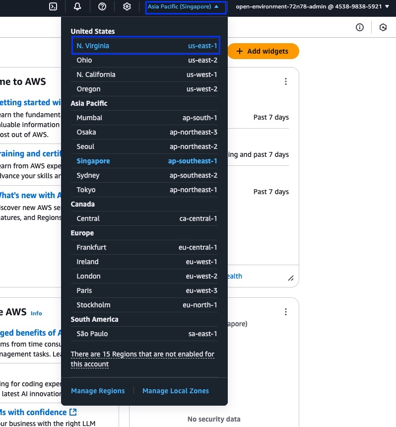 -
From within the AWS console, search for
VPCin the search bar and select VPC.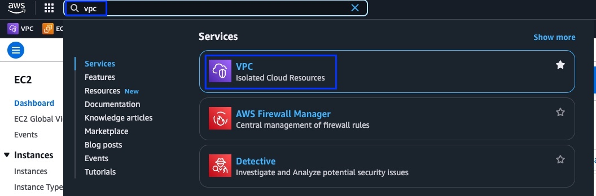 -
Click on Create VPC.
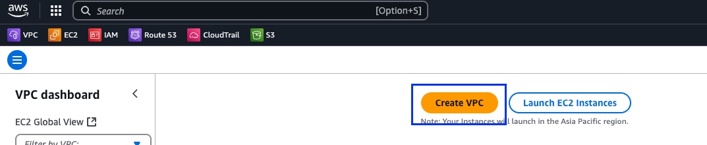Fill in the form as follows:
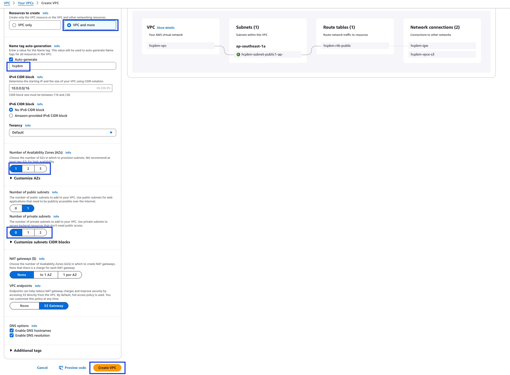-
Select VPC and more
-
Give a name
-
Select 1 under Number of Availability Zones (AZs)
-
Select 0 under Number of Private Subnets
-
Then click on Create VPC
-
-
Verify that the VPC and associated resources are created successfully and there are no errors.
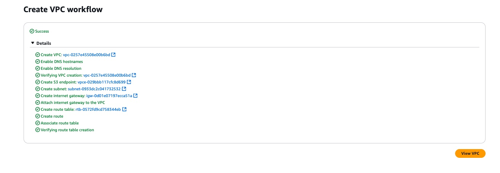 -
In the search window, type
EC2and click on EC2.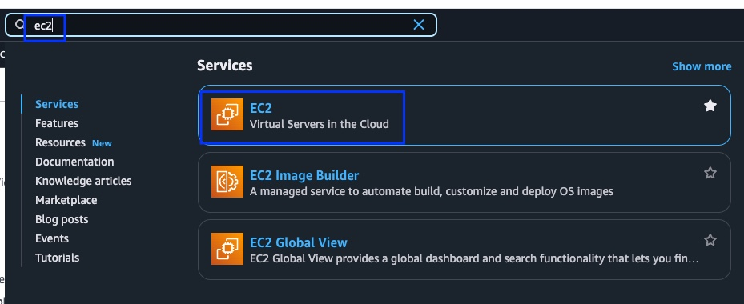-
Click on Launch Instance on the next page.
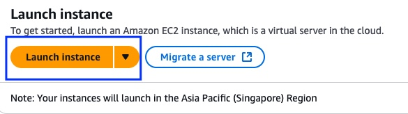 -
Give a name for the EC2 Instance.
-
Select Red Hat under Application and OS Images (Amazon Machine Image)
It is expected to work using the default RHEL10 AMI, but all testes were performed by selecting a RHEL9 AMI. -
Select
c5.metalunder Instance Type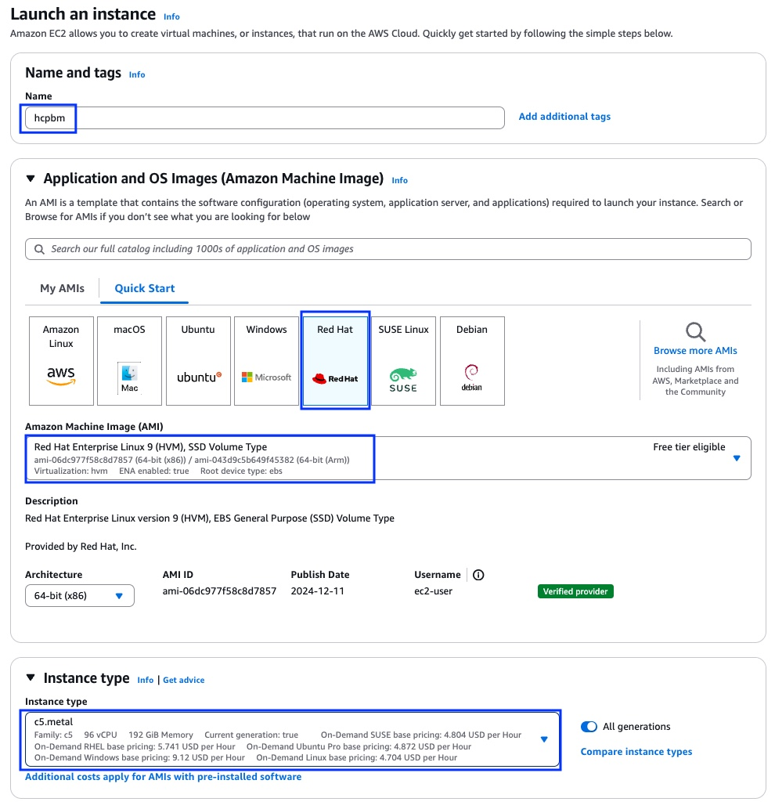
-
-
In the key pair section, click on Create new key pair
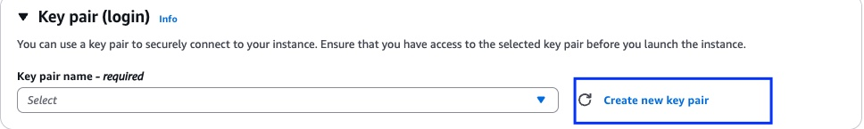-
Give it a name and click on Create key pair
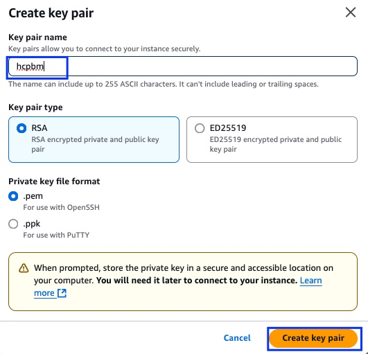 -
Save the automatically downloaded key pair in your local system with access permissions to the owner only.
$ chmod 600 <path to the key pair>
-
-
Click Edit next to Network Settings and fill in the panel as follows:
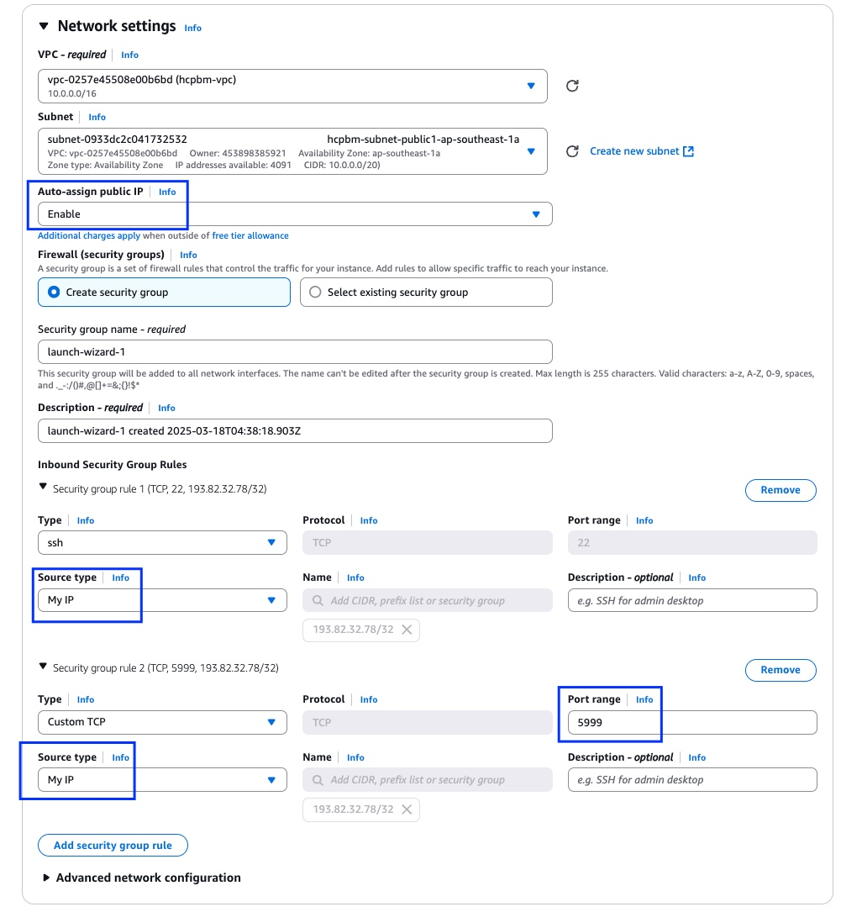-
Select Enable in Auto-assign public IP
-
Select My IP for Source type for ssh under Inbound Security Group Rules
-
Click Add security group rule
-
Set Port range to
5999 -
Select My IP for Source type for the second security group rule also.
-
-
Under Configure Storage, change the size of the disk to
750 GiB.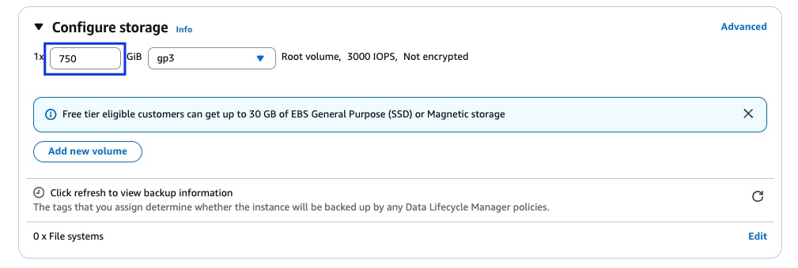 -
Then click on Launch instance from the Summary page, on the right side.
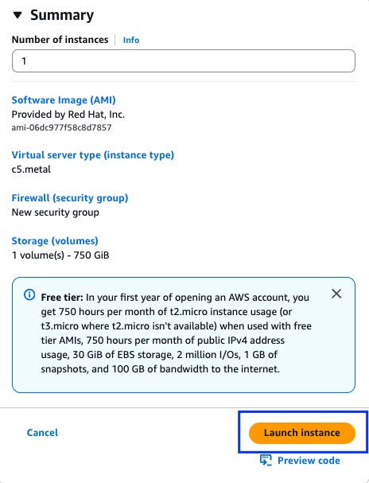If you get an AWS error stating there is no sufficient c5.metal capacity, try on a different availability zone. -
Wait a few moments until your AWS instance is up and running, before continuing with the next lab.